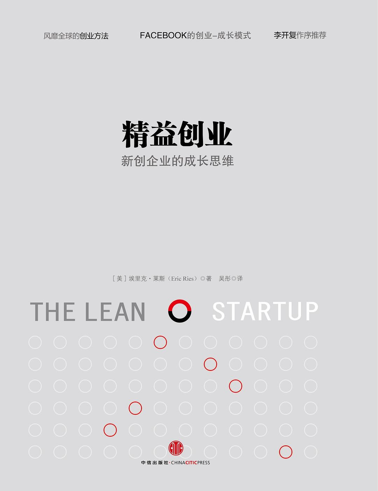

|  |
精益创业：新创企业的成长思维 |
序 爱和速度缔造的新一代企业
创业的第一阶段是把想法变成产品。这时开发的产品是精简的原型，投入最少的金钱和精力开发出体现核心价值的产品。此时创业者们率领精干的成员，用类似特种部队的组织方式，在有限的资源和时间窗口内用很短的时间做出产品，并快速投入市场，通过不断的小规模实验，获得顾客反馈，进而不断迭代，让产品得到市场验证。
创业的第二阶段，新创企业要对正确的产品形态进行重点投入，做好做细，做“最了解用户的人”，做到极致。这个阶段，必须用最小的成本、在最短时间里找到最有价值的认知。
创业的第三阶段，成功者往往伴随着爆发式的增长，全面的扩张。企业开始与传统的、陈旧的市场势力展开阵地战。这一过程中，创业企业的力量之源正来自此前积累的对用户的深入理解和对市场的快速反应，即“爱与速度”。能到达第三个阶段的创业企业，大都把“对用户有爱、对产品有爱”作为一种信仰。他们不能容忍产品有缺点，不能容忍产品的用户体验不好，不能容忍BUG，跟0.1秒的延迟较劲，跟0.1M的大小较真……
引言
在早期，我们确实是有一些顾客的。他们是真正有远见的使用者。我们常常和他们交流，听取反馈意见。但实际上，我们并没有按他们的建议去做，仅把这些提议视为我们的产品和整体愿景的信息来源之一。事实上更应该说，我们是在顾客那里进行实验，而不是迎合他们的奇思怪想。
精益创业的缘起
幸运的是，我的几位搭档都愿意尝试新方法。他们和我一样对传统思考方式的失败忍无可忍。同时，我们也有幸获得硅谷前辈史蒂夫·布兰克（SteveBlank）的垂青，他成为了我们的投资人和顾问。2004年的时候史蒂夫便开始宣扬一个新想法：应该把新创企业的业务及营销视为和工程及产品开发同样重要的职能，因此它们也需要一套同等严格的方法作为指导。他把这种方法称为“客户开发”（CustomerDevelopment），它为我作为一个创业者的日常工作提供了透视和指南。
精益创业的方法
本书针对的是创业者，以及那些需要承担类似责任的人。精益创业的五项原则组成了本书的三大部分。这五项原则如下：
- 创业者无处不在。你不一定非要在车库里折腾才算是创业。在我定义的创业企业中工作的任何人，都算得上是创业者。所谓的新创企业就是在充满不确定性的情况下，以开发新产品和新服务为目的而设立的个人机构。这意味着创业者无处不在，而且精益创业的方法可以运用到各行各业，在任何规模的公司，甚至是庞大的企业中。
- 创业即管理。新创企业不仅代表了一种产品（的问世），更是一种机构制度，所以它需要某种新的管理方式，特别是要能应对极端不稳定的情况。事实上，我相信“创业企业家”应该是一个在所有现代企业中使用的头衔，因为企业未来的增长需要依靠创新。我将在后文中详细论述这一点。
- 经证实的认知。新创企业的存在不仅仅是为了制造产品、赚取金钱、服务顾客，它们的存在更是为了学习了解如何建立一种可持续的业务。创业者们可以通过频繁的实验检测其愿景的各个方面，这种认知是可以得到验证的。
- 开发—测量—认知。新创企业的基本活动是把点子转化为产品，衡量顾客的反馈，然后认识到是应该改弦更张还是坚守不移。所有成功的新创企业的流程步骤都应该以加速这个反馈循环为宗旨。
- 创新核算。为了提高创业成果，并让创新者们负起相应责任，我们需要关注那些乏味的细枝末节：如何衡量进度，如何确定阶段性目标，以及如何优先分配工作。这需要为新创企业设计一套新的核算制度，让每个人都肩负职责。
新创企业为什么会失败
第一个原因在于好的计划、可靠的战略和深入的市场分析造成的诱惑。在早期，这些都是衡量成功可能性的指标。把它们也套入创业企业中去的想法令人难以抗拒，但是此路不通。因为新企业的运营当中包含了太多不确定性。企业还不知道谁是自己的顾客，自身的产品应该是什么。当情形变得更加难以捉摸之时，未来越发扑朔迷离。老的管理方式无法胜任这项工作。计划和预测只能基于长期的、稳定的运营历史和相对静止的环境，而这些条件是新创企业所不具备的。
第二个原因在于，当目睹运用传统管理方式无法摆脱困境后，一些创业者和投资人干脆就撒手不管，回到“想做就做”跟着感觉走的状态。人们相信，如果实施管理反而有问题的话，无为之治就是解决之道。不幸的是，我的亲身经历证明了这也行不通。
新创企业的那种颠覆性、创造性和混乱的状况是可以加以管理的，或者确切地说，必须加以管理。这种说法看似有违直觉。多数人认为流程和管理枯燥无味，而创业则充满活力和激情。但是真正令人激动的是看到企业获得成功，改变世界。人们为这些新企业付出的热情、精力和抱负都是珍贵的资源，不容随便浪费。
本书内容如何组织
“愿景”篇把创新管理作为一门新的学科。我说明了谁是创业企业家，定义了新创企业，阐述了一种让新创企业评估其进展的新方法，称为“经证实的认知”（Validated Learning）。为了获得这种认知，我们会看到，不管是从车库起家还是诞生于某个企业内部的新企业，都可以运用科学的实验方法，发现和了解如何建立一项可持续的业务。
“驾驭”篇深入研究了精益创业方法的细节，通过核心的“开发—测量—认知”（Build-Measure-Learn）反馈循环，揭示重要的转折。你会了解从一个极需严格检测的大胆假设开始，到如何开发最小化可行产品来验证这些假设，如何建立一个新的核算体系，评估是否取得进步，以及决定是要转型（在既定基础上改变路线）还是要继续坚持。
“加速”篇中，我们会探讨通过“开发—测量—认知”反馈循环，令新创企业尽量加速的技巧，即便企业规模扩大了也同样如此。我们将探讨适用于新创企业的精益生产概念，比如小批量的好处。我们还将讨论组织架构设计、产品如何成长，以及如何把精益创业原则从众所周知的车库创业帮，拓展延伸到全球最大的企业之中。
管理的新世纪
从社会层面而言，我们已经拥有了一整套管理大型企业的切实技巧，而且我们也知道制造实体产品的最佳方式。但谈到新创企业和创新，我们还在摸索中前行。我们依赖愿景，追随能创造奇迹的“伟大人物”，或是拼命分析新的产品。这些都是在20世纪当中随着管理的成功而产生的新问题。
第一篇 愿景
第一章 开端
创业管理
实质上，现代管理和科技创造了更高的产能，实现了生产能力的大幅提高，而这却让企业不知该如何应对。